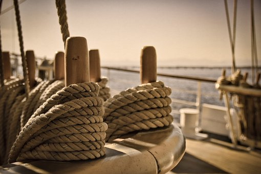
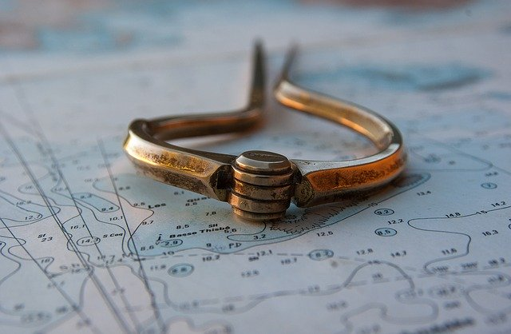
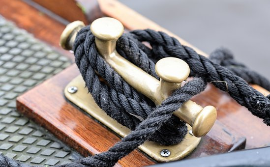
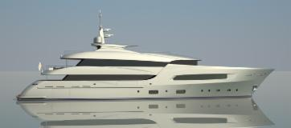

Asesoría náutica · Estepona · Desde 1999
Asesoría y gestoría náutica en la Costa del Sol
Fiscalidad náutica, gestión administrativa y oficina técnica para embarcaciones de recreo. Desde Estepona, para toda España. Más de 25 años acompañando a armadores, brokers y empresas de chárter.

Fiscalidad náutica
Importación, régimen aduanero y la opción fiscal más ventajosa para su barco.
Más informaciónGestoría náutica
Abanderamiento, cambios de titularidad, licencias, chárter y tripulación.
Más informaciónServicios técnicos
Surveys de compraventa, ITB, Marcado CE, tasaciones y peritaciones.
Más informaciónexperiencia
Quiénes somos
Un servicio integral, pensado para cada embarcación
Global Nautica nació en plena Costa del Sol en 1999 para ofrecer un servicio integral dentro del sector náutico, especializados en náutica de recreo.
Nuestra experiencia, unida a una constante adaptación a los cambios normativos, fiscales, administrativos y tecnológicos, nos permite dar soluciones reales a las necesidades de nuestros clientes.
La idea es clara: cada cliente y cada embarcación es diferente. Por eso trabajamos con propuestas personalizadas dentro de un amplio abanico de posibilidades.
Nos enorgullecemos de nuestra alta tasa de fidelización y de contar con clientes recurrentes, gracias a que planteamos soluciones adaptadas a las necesidades específicas de cada cliente en cada momento.
Servicios
Tres áreas, un solo interlocutor
Trabajamos en las tres ramas de la náutica de recreo. Nuestro equipo estará encantado de atenderle y darle un trato personalizado.

Fiscalidad náutica
Nuestro amplio conocimiento del código aduanero de la Unión Europea nos permite ofrecer las diversas opciones posibles dentro de un proyecto personalizado, teniendo en cuenta las necesidades del cliente y las características de su embarcación.
- Asesoramiento fiscal especializado
- Importación definitiva en la UE
- Importación temporal en la UE
- Importación a libre práctica
- Exportaciones
- Régimen de perfeccionamiento aduanero
- Gestiones aduaneras
Siempre poniendo el foco en la solución más ventajosa para el cliente.
Todo sobre fiscalidad náutica
Gestión administrativa
Nos ocupamos de toda la documentación de su embarcación, en España y en el extranjero, para que usted solo tenga que pensar en navegar.
- Registro de embarcaciones en España, países de la UE y otras banderas extracomunitarias
- Estructuras comerciales (chárter, Lista 6ª)
- Asesoramiento en la compraventa de embarcaciones
- Cambio de propiedad, nombre, puerto, lista, etc.
- Certificado de Navegabilidad y Permiso de Navegación
- Impuesto de Matriculación (IEDMT) e ITP
- Gestión de Inspección Técnica de Buque (ITB)
- Licencia de Estación de Barco (LEB)
- Obtención de nº de MMSI
- Autorizaciones de chárter en España para embarcaciones extranjeras
- Licencia de actividades comerciales y turísticas en Puertos de Andalucía
- Gestión de tripulación: enrole / desenrole y tripulación mínima
- Registro de operadores de embarcaciones de alta velocidad (AEAT)
- Licencias de pesca para la embarcación
- Renovación de titulaciones náuticas
- Puesta al día de la documentación de la embarcación

Departamento técnico
Oficina técnica naval para acompañarle en la compraventa, las inspecciones y la homologación de su embarcación.
- Informes técnicos de estado para compraventa (servicio de surveyor)
- Gestión de Inspecciones Técnicas periódicas, intermedias y extraordinarias (ITB)
- Tramitación de Marcado CE (homologación)
- Gestión de tasaciones y peritaciones
- Obtención de Tonnage Certificate
Cómo trabajamos
Sencillo para usted, riguroso por nuestra parte
-
01
Le escuchamos
Nos cuenta su situación, su embarcación y lo que necesita. Por teléfono, email o en nuestra oficina de Estepona.
-
02
Estudiamos su caso
Analizamos las opciones fiscales, administrativas y técnicas y le proponemos la más ventajosa.
-
03
Lo gestionamos todo
Nos encargamos de los trámites de principio a fin y le mantenemos informado en cada paso.
Enlaces de interés
Antes de soltar amarras
Contacto
¿Hablamos de su embarcación?
Cuéntenos su caso y le propondremos la solución que mejor se adapte a usted.
-
Oficina Avda. del Carmen nº9, Edif. Puertosol, 1º Of. 27
29680 Estepona (Málaga), España
Responsable: Global Nautica Marine SL. Trataremos sus datos para responder a su consulta y, si nos encarga un servicio, para prestarlo. Puede ejercer sus derechos de acceso, rectificación, supresión y otros escribiendo a info@globalnautica.com. Más información en la política de privacidad.